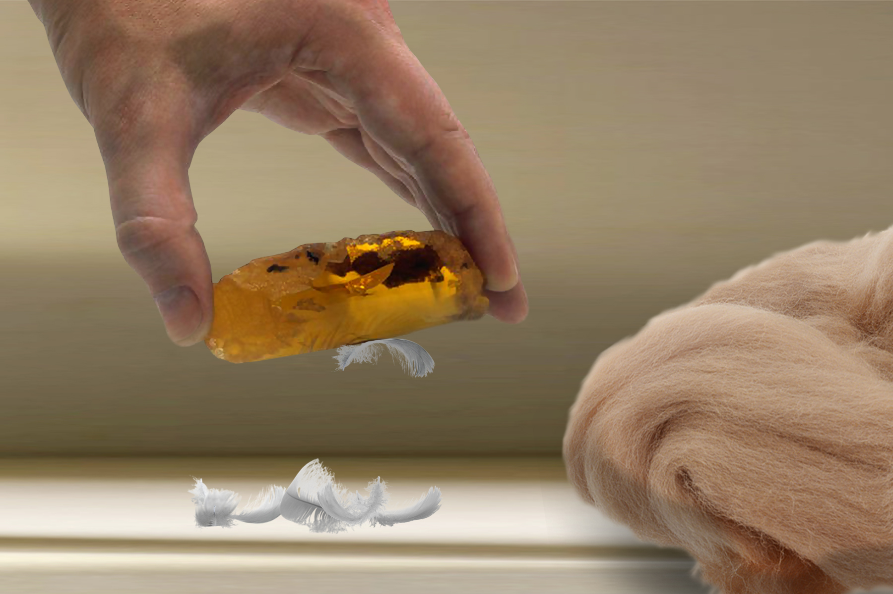
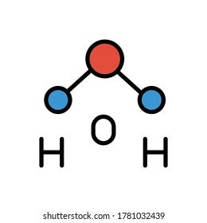
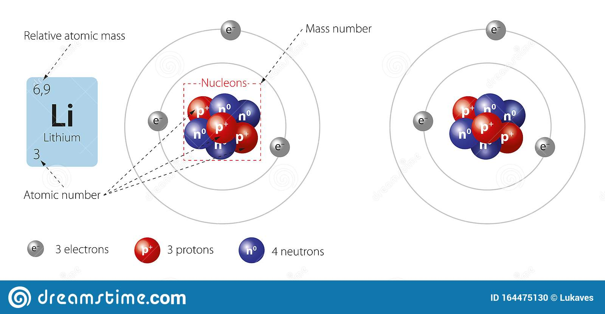
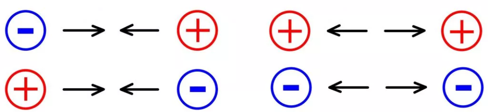
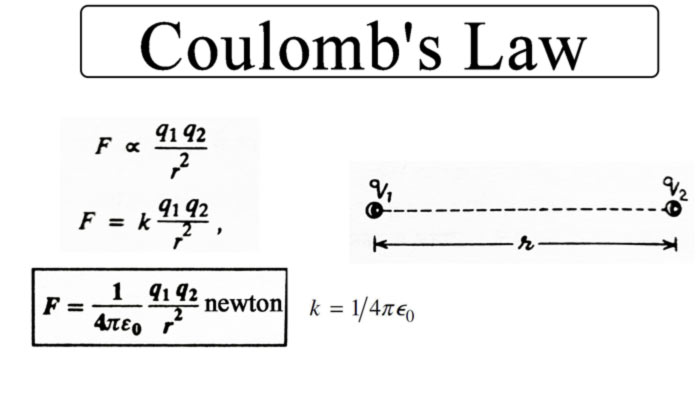

Приветствую вас на курсе основы электроники. В данной серии мы получим базовое представление понятия заряда и явление электричества
Впервые свойства электричества были замечены приблизительно 2500 лет назад Грецким философом Фалесом Милентским

Учёный заметил, что натёртый шерстью янтарь притягивал к себе мелкие предметы. Однако, на уровне знаний того времени считалось, что любая вещь должна притягиваться к земле, т.е падать на нее под действием силы земного притяжения. Тем не менее, натертый янтарь обладал некими свойствами - зарядом, сила которых превосходила силу mg, это явление есть явление статического электричества

Данный опыт довольно просто повторить. Возьмите пластмассовую ручку и тщательно протрите ее об одежду, содержащую в своем составе шерсть. Затем, преподнесите ручку к маленьким кусочкам бумаги и под действием силы электрического поля, бумага должна притянуться к ручке
Давайте рассмотрим физику происходящего процесса. Для начала, обратим внимание на строение любого вещества. Возьмём в пример дистиллированную воду > она состоит из множества множества одинаковых молекул H2O > в свою очередь H2O состоит из ещё более мелких частиц > атомов: двух атомов водорода и одного атома кислорода

Раньше считалось, что атом - наименьшая частица во вселенной и по этой причине, получила свое название, что с древнегреческого означает неделимый. Тем не менее, сейчас это название не актуально, т.к атом также можно разделить на более мелкие частицы. Планетарная модель атома выглядит так:

Он состоит из ядра - протонов и нейтронов, и электронов, находящихся на электронных орбитах. Планетарную модель рисуют для упрощения общего представления понятия атома, в действительности же картина чуть более хаотична. Электрон - это не что-то плотное, имеющее физическое тело, а маленький, летающий в пространстве сгусток энергии. Поэтому, масса протона или нейтрона приблизительно в 2000 раз больше массы электрона, но не смотря на это, величины заряда они имеют одинаковый. Электрический заряд - это та энергия, которую хранит в себе электрон. В международной СИ за еденицу заряда приняли Кулон. [Кл] = 6,2 * 10^20 е-. Принято, что электрон имеет отрицательный заряд, а протон - положительный, нейтрон же, следуя из своего имени, не имеет заряда - он нейтрален и поэтому для нас он не имеет принципиального значения. Атом и его строение изучает наука химия
Возвращаясь к планетарной модели атома, можем увидеть как ядро, т.е положительно заряженные протоны находятся в центре, электроны же - плавают по орбитам. Так случилось, что одноименные заряды отталкиваются друг от друга, противоположные же - притягиваются

Силу притяжения между зарядами можно найти из закона Кулона F = k*q1*q2/r^2, где к - постоянная Кулона - коэф, означающий силу взаимодействия между двумя точечными неподвижными зарядами и равный 9*10^9 кг/с^2, q1 и q2 - заряды, а r - расстояние между ними. Поэтому, электроны притягиваются с какой-то определенной силой постоянно притягиваются к ядру и чем ближе они к нему находятся, тем сильнее притяжение. Исходя из этого, можно сделать вывод о том, что электроны, находящиеся на более дальних от ядра орбитах имеют самую слабую связь с ним, и при случае, может легче всего покинуть атом. Именно электроны расположенные на последней электронной оболочке находят практическое применение в электронике

Представим, что у нас есть два атома. По умолчанию, кол-во протонов и электронов одинаково и они компенсируют друг друга, атом получается нейтрально заряженным. Представим, что один из них отдал свой электрон а второй его к себе присоединил. В химии этот процесс называется ионизацией и может быть обоснован стремлением атомов к стабильности строения - к конфигурации инертных газов. Таким образом, суммарный заряд атомов меняется, а значит меняется и суммарный заряд молекулы и вещества. Этот процесс называется электризацией - если тело имеет ярко выраженный перевес одного заряда в пользу другого, то говорят, что оно наэлектризовано
Что же, получив базовый багаж знаний, мы теперь сможем понять принцип работы эксперимента с пластмассовой ручкой и шерстью. Все просто, когда ручку натирают о шерсть, то благодаря силе трения, шерсть сообщает поверхности ручки небольшой отрицательный заряд, т.е с атомов в составе молекул шерсти покидает какое-то кол-во электронов и оседает на ручку - опять же, это значит, что атомы в составе молекул ручки присоединяют эти электроны себе. В итоге, у нас есть отрицательно заряженная ручка и положительно заряженная шерсть. Также, можно получить обратный результат со стеклянной палочкой и шелком. Стоит заметить, что все материалы в эксперименте - диэлектрики (или иозляторы), они плохо проводят электричество. Будь вместо стеклянной палочки к примеру, хорошо проводящий электричество металл, то заряд ушел бы в никуда распространившись по ней и рассеившись в нашем теле или уйдет в землю. На диэлектриках же, заряд остаётся на том же месте, где и возник
Теперь, почему кусочки бумаги притягиваются к электризованому телу, причем как к заряженной отрицательно ручке, так и к заряженной положительно стеклу? На самом деле, ничего нового. В бумаге, все противоположно ручке заряженные ионы переходят к одному краю, к тому где находятся сама ручка. Т.е, т.к ручка заряжена отрицательно, сторона бумаги, которой она притянулась будет заряжена положительно, обратная же сторона - соответственно отрицательно. Плюс к минусу, и минус от минуса. В случае же с положительной стеклянной палочкой, просто меняются местами полюса бумаги и она все так же будет притягиваться :)